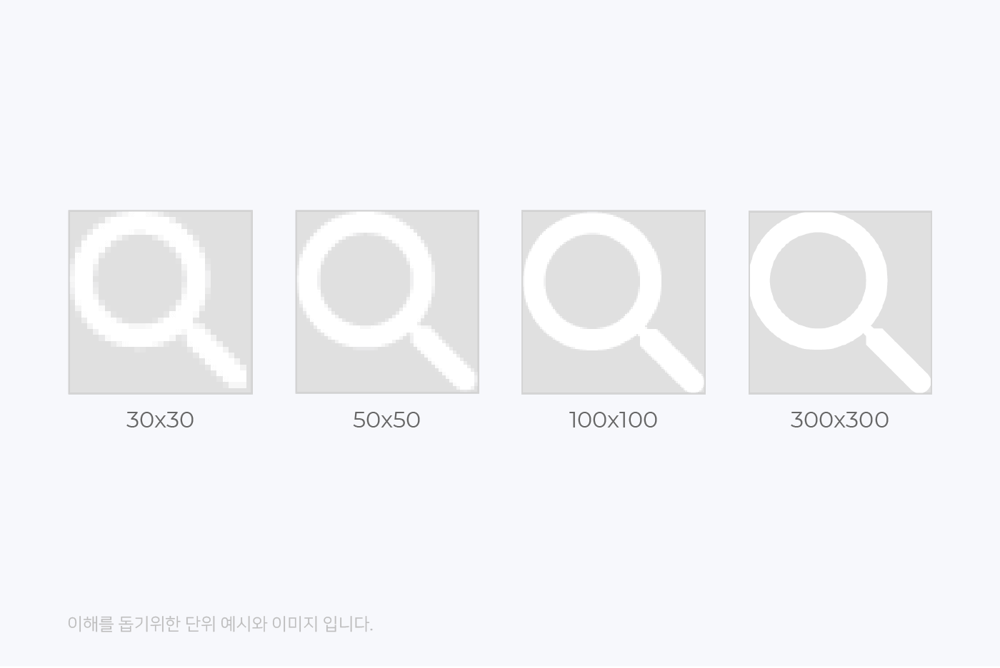

해상도와 래스터화
해상도(Resolution)와 ppi(pixels per Inch)
해상도란 TV, 모니터, 스마트폰 등 디스플레이 장치에서 화면을 이루는 각각의 면이 몇 개의 픽셀로 이루어져 있는가를 나타내는 것입니다.

해상도는 이미지의 가로와 세로에 몇 개의 화소(픽셀)가 있는지를 뜻합니다. 위 이미지를 보면 해상도에 따라 이미지가 다르게 보입니다.
화소(픽셀)가 적은 30x30보다 100x100 해상도에서 더욱 또렷하게 보입니다. 화소(픽셀)가 많으면 많을수록 더 세밀하게 이미지를 표현할
수 있기 때문입니다.
그러나 여기서 문제가 생깁니다. 똑같은 화소(픽셀)의 양이라도 ‘화소(픽셀)의 크기’가 다르다면? 세밀함의 정도가 또 달라 보일 수 있습니다.
그래서 약속의 단위를 만들었는데, 바로 PPI(Pixels per Inch)입니다. PPI는 ‘Pixels per Inch’의 약자로 1인치당 픽셀(Pixel)이
몇 개인지를 나타내는 것으로 디스플레이의 픽셀 밀도를 뜻합니다.
해상도와 ppi는 높을수록 좋은 것일까요? 답은 NO입니다.
해상도와 ppi는 높을수록 세밀한 표현이 가능하지만 화소(픽셀) 하나하나는 모두 메모리에 그 정보가 기록됩니다. 그렇기 때문에 해상도가
높아지면 그만큼 메모리를 많이 소모하게 됩니다. 메모리 용량은 무제한으로 커질 수 없기 때문에 인터넷 환경이 느려지게 됩니다.
2012년 12월 LG 경제연구원에서 발표한 자료에 의하면, <인지 한계 해상도 공식>에 의해 스마트폰의 경우 20~30cm를 기준으로 437ppi까지
구분이 가능하고, 모니터의 기준은 (물론, 각 업체들마다 약간씩 다르긴 하지만) 시청거리를 50~60cm정도에서 인접 픽셀이 구분되지 않을 정도로
선명하다고 느끼는 ppi는 185ppi 정도라고 합니다. 그러므로 디스플레이는 크기와 용도에 따라 요구되는 해상도가 다르게 제작됩니다.
각 디바이스의 다양한 해상도의 디스플레이에 출력되는 웹을 디자인하고 개발하기 위해서는 각 디스플레이의 해상도를 정확하게 이해하고,
올바르게 보여질 수 있도록 작업해야 합니다.
잠깐, 5K라는 용어도 들어봤는데 이건 뭐죠?
5K는 해상도의 단순 표현 방법의 하나로 1,000(kilo)의 5배라서 5K라고 부릅니다. 정확하게 5,000을 의미하는 게 아니라 ‘약 5,000픽셀
정도의 가로 해상도’가 바로 5K가 되는 것입니다.
래스터화(Rasterization)란?
그래픽을 렌더링하는 방식중 하나로 래스터화(Rasterization)란 화면의 오브젝트를 픽셀로 매핑하는 것으로, 디스플레이 시스템이 전자 데이터 또는 신호를 비디오나 이미지로 바꾸는 프로세스입니다. 이는 일반적으로 특정 미디어 구성의 요구를 파악한 다음 이미지를 효율적이고 최적으로 디스플레이 장치에 투영할 수 있도록 리소스를 할당하는 프로세스입니다.
래스터화 단계
논리적 표현 : dp
처음에는 모든 도면의 좌표 dp단위로 지정됩니다. dp는 추상 단위이며, 이 수학 좌표 공간에서만 의미가 있습니다. Density-independent
pixel의 줄임말로 화면의 크기가 달라도 동일한 비율로 보여주기 위해 안드로이드에서 정의한 단위입니다.
물리적 표현 : Rendered Pixels(px)
dp는 픽셀(px)로 렌더링(rendering)됩니다. 이 과정을 래스터화(rasterization)라고 합니다. dp에 배율을 곱하여 픽셀(px)을 얻습니다.
배율이 높을수록 선명도(detail)가 높아집니다.
다운샘플링 : Physical Pixels(downsampling, px)
장치 화면의 해상도가 이전 단계에서 렌더링 된 이미지보다 낮을 수 있습니다. 이미지를 표시하려면 해상도를 낮추기 위해 이미지를
다운샘플링(크기 조정)해야 합니다.
인지 : Physical Device(ppi)
마지막으로, 계산된 픽셀(px)이 물리적 화면에 표시됩니다. ppi는 1인치에 얼마나 많은 픽셀(px)이 들어가는지, 따라서 픽셀(px)이
실물로 얼마나 큰지를 알려줍니다.